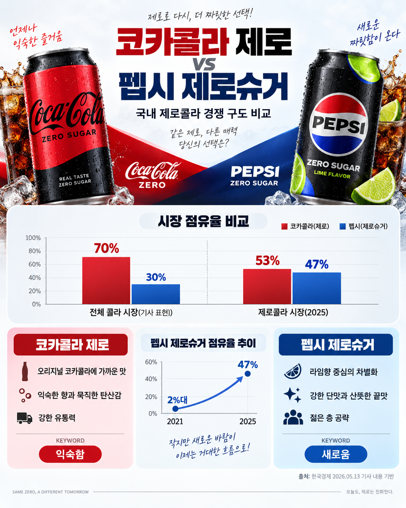
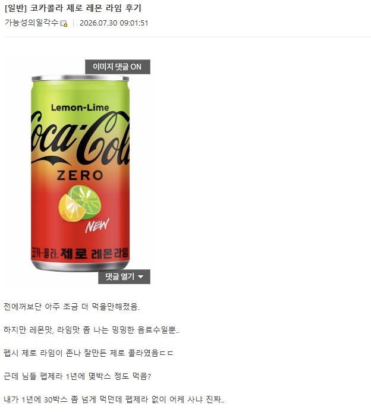
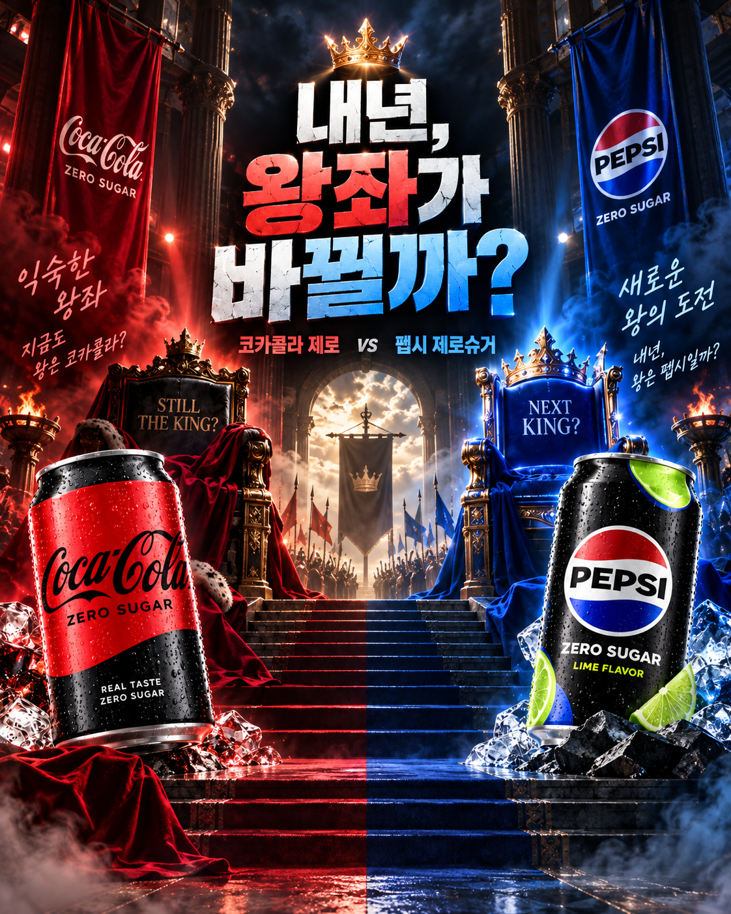

한 줄 요약 : 제로콜라 시장 점유율 2%였던 펩시 제로가 47%까지 올라오며 코카콜라 제로 턱밑 추격

출처 : https://www.hankyung.com/article/202605084535g
개드립에서 제로 콜라 관련 글 올라오면 이미 코카콜라 제로는 저세상가고 펩시 제로 라임이 제로콜라 시장 정복한 것 같지만
아직은 제로 콜라가 간신히 50% 이상 점유율 유지 중..
다만 영크크 중심으로 펩제라 위주의 소비가 늘어나며 무서운 속도로 점유율이 올라가 제로 콜라 시장의 왕관을 빼앗기 직전
발등에 불 떨어진 LG생건은 코카콜라 제로 레몬, 코카콜라 제로 레몬라임 등 비슷한 결의 제품을 출시하며 어떻게든 왕좌를 내놓지 않으려하는 중
하지만..

후기도 영 좋지 않은 모습이라 이 친구도 곧 없어질 것 같다...

과연 내년에는 드디어 롯데 칠성의 역작 펩시 제로 라임이 LG 생건의 코카 콜라 제로를 넘어설 수 있을 것인가
난 유자사이다로 갈아탔음